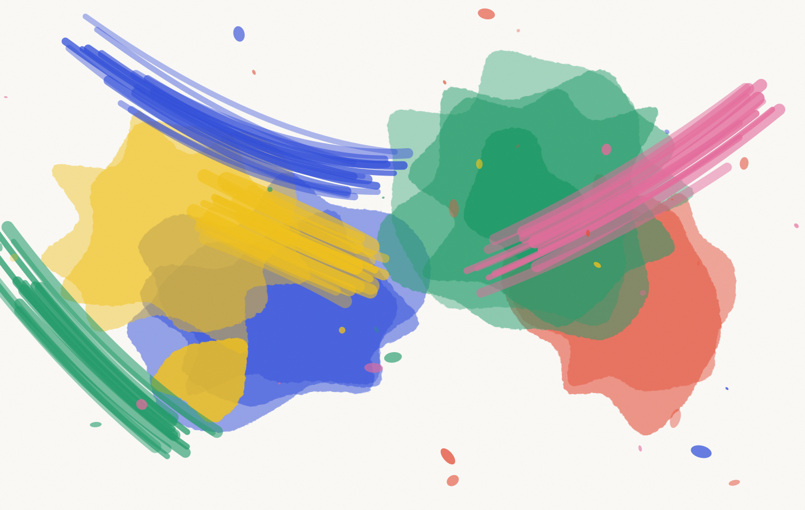
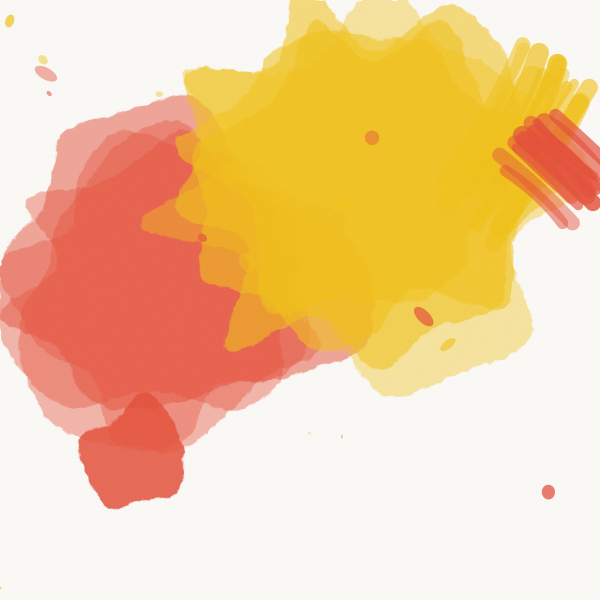
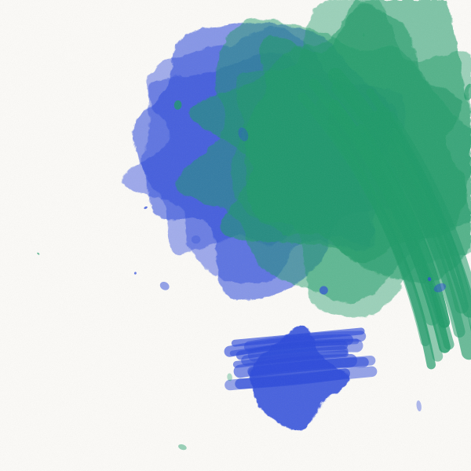
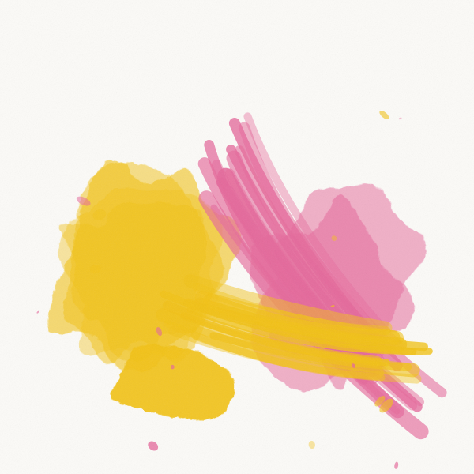
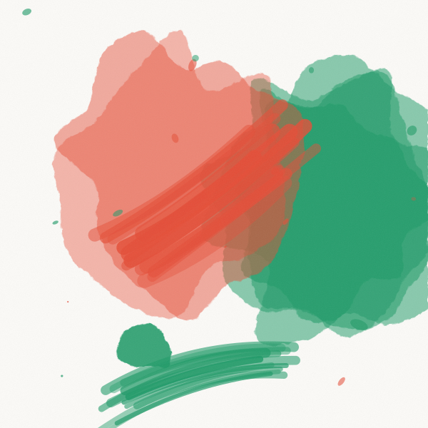
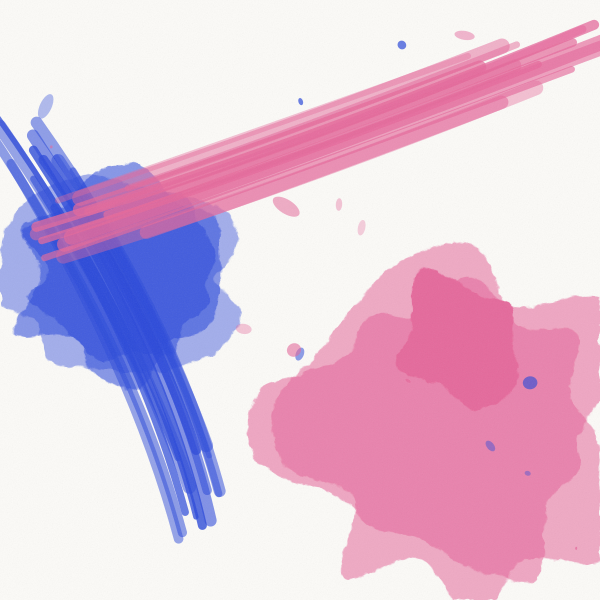

Le studio · Ridgewood, Queens
On a essayé de grandir une fois. On est passés à neuf en 2023, et le travail s’est mis à ressembler à celui de tout le monde. On est redescendus.


Direction artistique, cofondatrice
Quinze ans de métier, dont sept en agence de publicité qu’elle préfère ne pas nommer. Dessine encore tous les logotypes du studio à la main avant de les vectoriser.

Design et typographie, cofondateur
Formation d’imprimeur avant celle de designer. C’est lui qui va chez les fabricants et qui dit non quand le papier ne tient pas.

Designer senior
Arrivée en 2022. S’occupe de la signalétique et de tout ce qui existe en trois dimensions. Ancienne scénographe.

Designer
Danois, installé à New York depuis 2021. Fait le gros du travail de déclinaison et tient les manuels de marque à jour.

Production et comptes
Tient les plannings, les devis et les imprimeurs. C’est elle qui vous répondra en premier.
Une identité se juge dehors, pas en réunion. On passe toujours au moins une journée dans le lieu, la boutique, l’usine, l’hôtel. On a pris deux nuits au Bonaventure avant de dessiner la première lettre. Ce qu’on apprend là ne figure jamais dans un brief.
Deux directions, jamais cinq. Cinq pistes, c’est l’aveu qu’on n’a pas tranché. On en présente deux, abouties, défendables, différentes. Si aucune ne va, on recommence à nos frais. C’est arrivé trois fois en sept ans.
On ne livre pas des fichiers, on livre un système. La question n’est pas de savoir si le logo est beau sur la planche de présentation. C’est de savoir si votre stagiaire saura faire une story correcte dans dix-huit mois, sans nous.
Le consensus abîme tout. Si une direction ne provoque aucune réaction chez personne, elle ne provoquera rien chez vos clients non plus. On préfère une réunion tendue à une validation polie.
Un bon client, c’est quelqu’un qui sait ce qu’il n’aime pas et qui accepte de dire pourquoi.
Théo Vanier, cofondateur
2019
Nour et Théo quittent leurs agences respectives la même semaine, sans s’être concertés. Premier bureau au-dessus d’un atelier de sérigraphie sur Woodbine Street. Premier client, une boulangerie à deux rues.
2021
Premier projet européen, pour une librairie de Lisbonne. On découvre qu’on travaille mieux avec six heures de décalage qu’avec un client à dix minutes.
2023
On passe à neuf personnes. On accepte deux projets qu’on aurait dû refuser. On revient à cinq en décembre.
2025
Le Bonaventure. Premier projet où la signalétique précède l’identité. Ça devient une méthode.
2026
Soixante-quatrième projet livré. On garde le même bureau, le même nombre de personnes et le même imprimeur.
Certificat d’excellence typographique, 2025, pour le caractère à chiffres du Bonaventure.
Argent, catégorie signalétique, 2025. Montréal.
Projet du jour, mars 2026, pour l’identité mouvante de Fracas.